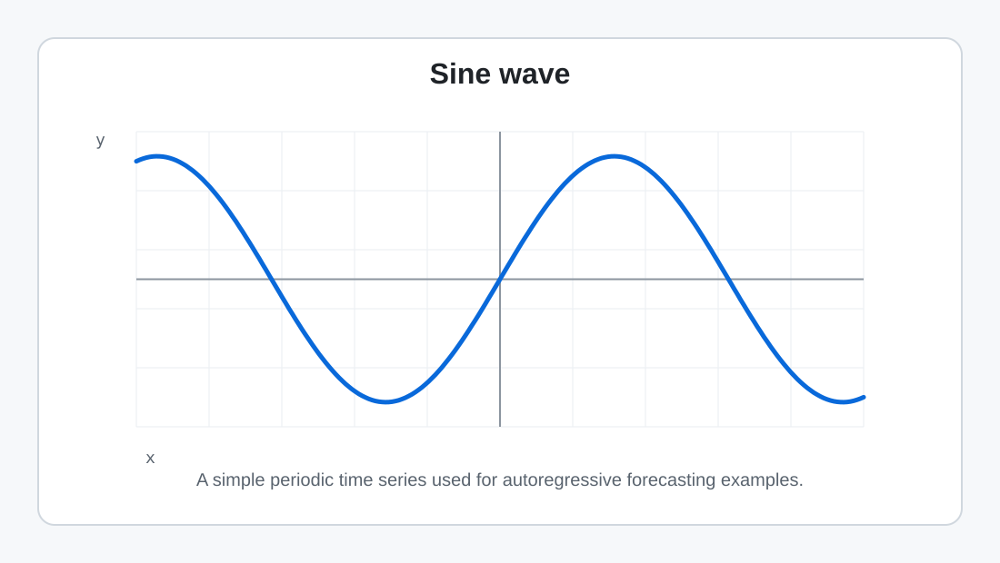

Forecasting (Code): Autoregressive Linear Model in PyTorch
Goal: implement an autoregressive (AR) linear model for time-series prediction, then evaluate it in the right way for a multi-step forecast.
1) What this chapter is building
Chapter 8 introduced the concept: turn a time series into supervised windows, train a simple baseline, and be careful not to leak future values. Here we implement that baseline in PyTorch.
The model is intentionally simple:
That is just a linear layer from a lookback window of length \(T\) to one scalar prediction. The point is not that this model is always powerful. The point is that it is the cleanest baseline for learning the mechanics of forecasting: windowing, chronological splitting, training, and recursive evaluation.
2) Create a controlled time series
A sine wave is useful because it is periodic, smooth, and easy to debug. We can add noise later to make the problem more realistic. Starting clean is a good engineering habit: if the simple case fails, the bug is probably in the data shaping or evaluation logic.

# --- Imports ---
import numpy as np
import torch
import torch.nn as nn
import matplotlib.pyplot as plt
np.random.seed(0)
torch.manual_seed(0)
# --- 1) Create a synthetic time series ---
N = 1000
omega = 0.1
t = np.arange(N)
series = np.sin(omega * t).astype(np.float32)
# Optional: make the task more realistic after the clean version works.
# noise_std = 0.2
# series = (series + noise_std * np.random.randn(N)).astype(np.float32)
plt.figure(figsize=(10, 3))
plt.plot(series)
plt.title("Synthetic time series")
plt.xlabel("time index")
plt.ylabel("x[t]")
plt.show()3) Build the dataset by windowing
Windowing is where most forecasting bugs begin. For each target time, the model should only see values before that target. If \(T=10\), then one example looks like this:
The input has shape \((T,)\). The target is one scalar. Once we stack all windows, \(X\) has shape \((\text{num_windows}, T)\) and \(y\) has shape \((\text{num_windows}, 1)\).
def make_windows(series: np.ndarray, lookback: int):
"""
X[i] = series[i : i+lookback]
y[i] = series[i+lookback]
Also returns target_times so we can split by the target's time index.
"""
series = np.asarray(series, dtype=np.float32)
if len(series) <= lookback:
raise ValueError("series is too short for the chosen lookback")
X, y, target_times = [], [], []
for start in range(len(series) - lookback):
end = start + lookback
X.append(series[start:end])
y.append(series[end])
target_times.append(end)
X = np.asarray(X, dtype=np.float32)
y = np.asarray(y, dtype=np.float32).reshape(-1, 1)
target_times = np.asarray(target_times)
return X, y, target_times
T = 10
X, y, target_times = make_windows(series, lookback=T)
print("X shape:", X.shape) # (N-T, T)
print("y shape:", y.shape) # (N-T, 1)
print("First window:", X[0])
print("First target:", y[0, 0])A tiny off-by-one sanity check
If `series = [0, 1, 2, 3, 4]` and `T = 2`, the windows should be:
| Input window | Target |
|---|---|
| [0, 1] | 2 |
| [1, 2] | 3 |
| [2, 3] | 4 |
If your code produces a different table, fix the indexing before training anything.
4) Chronological split: split by time, not randomly
For time series, do not randomly shuffle examples before deciding train and validation. A forecast should train on the past and validate on the future.
A subtle but important point: split according to the target time. The first validation example may use a lookback window that contains the last observed training values. That is not leakage; at the validation forecast origin, those historical values are known. Leakage begins when you use true values after the forecast origin while rolling forward.
# Target times before this point are training targets.
split_time = int(0.6 * N)
train_mask = target_times < split_time
val_mask = target_times >= split_time
X_train, y_train = X[train_mask], y[train_mask]
X_val, y_val = X[val_mask], y[val_mask]
target_times_val = target_times[val_mask]
print("train:", X_train.shape, y_train.shape)
print("val:", X_val.shape, y_val.shape)
# Convert to torch tensors.
X_train_t = torch.tensor(X_train, dtype=torch.float32)
y_train_t = torch.tensor(y_train, dtype=torch.float32)
X_val_t = torch.tensor(X_val, dtype=torch.float32)
y_val_t = torch.tensor(y_val, dtype=torch.float32)Where scaling belongs
If you standardize the series, fit the mean and standard deviation on the training period only, then apply those same statistics to validation/test. Fitting a scaler on the full series leaks future distribution information.
# Optional scaling pattern. Fit only on observed training history.
train_values_for_scaler = series[:split_time]
mean = train_values_for_scaler.mean()
std = train_values_for_scaler.std() + 1e-8
series_scaled = (series - mean) / std
# Then rebuild windows from series_scaled using the same function.5) Define the AR model in PyTorch
The AR(\(T\)) linear model is one layer:
In PyTorch, `nn.Linear(T, 1)` stores the \(T\) lag weights plus one bias. It receives a batch of windows with shape \((B,T)\) and returns \((B,1)\).
model = nn.Linear(T, 1)
loss_fn = nn.MSELoss()
optimizer = torch.optim.Adam(model.parameters(), lr=0.05)
print(model)
print("weight shape:", model.weight.shape) # (1, T)
print("bias shape:", model.bias.shape) # (1,)6) Train with full-batch gradient descent
Because this dataset is small, we can use all training windows each step. For larger datasets, you would use mini-batches with a `DataLoader`. The forecasting logic below is unchanged.
def train_full_gd(model, Xtr, ytr, epochs=300):
losses = []
for epoch in range(epochs):
model.train()
pred = model(Xtr) # (num_train_windows, 1)
loss = loss_fn(pred, ytr)
optimizer.zero_grad()
loss.backward()
optimizer.step()
losses.append(loss.item())
return losses
losses = train_full_gd(model, X_train_t, y_train_t, epochs=300)
plt.figure(figsize=(8, 3))
plt.plot(losses)
plt.title("Training loss (MSE)")
plt.xlabel("epoch")
plt.ylabel("loss")
plt.show()Check the learned lag weights
A linear AR model is interpretable. The learned weights show which lags are useful. For a clean sine wave, only a small number of lags are theoretically necessary, although a larger lookback can still learn a good recurrence.
with torch.no_grad():
weights = model.weight.detach().cpu().numpy().ravel()
bias = float(model.bias.detach().cpu())
print("bias:", bias)
print("lag weights:", np.round(weights, 3))7) One-step validation vs real multi-step forecasting
The wrong answer to the wrong question
If you run `model(X_val_t)`, every validation prediction receives a window containing true historical values from the validation period. That is a valid one-step-ahead evaluation, but it is not a valid 50-step forecast from a single origin.
It answers: “How good is the model if the latest real observation is always available before each prediction?” It does not answer: “What happens if I stand at the split point and forecast the next 50 unknown values?”
# One-step-ahead validation. Useful, but not a multi-step forecast.
model.eval()
with torch.no_grad():
one_step_preds = model(X_val_t).squeeze(1).cpu().numpy()
plt.figure(figsize=(10, 3))
plt.plot(y_val.squeeze(), label="target")
plt.plot(one_step_preds, label="one-step predictions")
plt.title("One-step validation: true windows are supplied each step")
plt.legend()
plt.show()The correct recursive forecast
For a multi-step forecast, start from one known lookback window. Predict the next value, append that prediction to the window, drop the oldest value, and repeat.
def recursive_forecast_torch(model, start_window, horizon):
"""
start_window: shape (T,), the last known values at the forecast origin.
horizon: number of future steps to predict.
"""
model.eval()
window = torch.tensor(start_window, dtype=torch.float32).clone()
preds = []
with torch.no_grad():
for _ in range(horizon):
y_hat = model(window.view(1, -1)) # (1, 1)
y_scalar = y_hat.view(()) # scalar tensor
preds.append(float(y_scalar))
# Drop oldest value and append the model's prediction.
window = torch.cat([window[1:], y_scalar.view(1)])
return np.asarray(preds, dtype=np.float32)
horizon = len(y_val)
start_window = X_val[0] # known context at the first validation target
recursive_preds = recursive_forecast_torch(model, start_window, horizon=horizon)
plt.figure(figsize=(10, 3))
plt.plot(y_val.squeeze(), label="target")
plt.plot(recursive_preds, label="recursive forecast")
plt.title("Recursive validation: predictions feed future predictions")
plt.legend()
plt.show()8) Compare metrics
Use the same target array for both predictions. The one-step result is usually better because it receives true validation inputs at every step. The recursive forecast is the harder and more realistic multi-step test.
def mae(y_true, y_pred):
return np.mean(np.abs(y_true - y_pred))
def rmse(y_true, y_pred):
return np.sqrt(np.mean((y_true - y_pred) ** 2))
y_true = y_val.squeeze()
print("One-step MAE:", mae(y_true, one_step_preds))
print("One-step RMSE:", rmse(y_true, one_step_preds))
print("Recursive MAE:", mae(y_true, recursive_preds))
print("Recursive RMSE:", rmse(y_true, recursive_preds))What you should observe
- No-noise sine wave: both methods can look nearly perfect because the signal follows a clean recurrence.
- Noisy sine wave: one-step validation often still looks good, while recursive forecasting drifts as errors compound.
- Real business series: regime changes, promotions, holidays, missing data, and exogenous variables often matter more than model complexity.
9) Why can a linear AR model predict a sine wave so well?
A sine wave has an exact 2-step linear recurrence. If \(x_t = \sin(\omega t)\), then:
This means an AR(2) model can represent a clean sine wave perfectly. Using \(T=10\) gives the model more lags than it strictly needs, but the linear layer can learn weights that implement the recurrence. Noise breaks the exact recurrence, which is why recursive forecasting becomes imperfect.
Sketch of the derivation
Use the identity: \[ \sin(a+b) + \sin(a-b) = 2\sin(a)\cos(b) \] Let \(a = \omega t\) and \(b = \omega\). Then: \[ \sin(\omega(t+1)) + \sin(\omega(t-1)) = 2\sin(\omega t)\cos(\omega) \] Rearranging gives: \[ \sin(\omega(t+1)) = 2\cos(\omega)\sin(\omega t) - \sin(\omega(t-1)) \]
10) Extending the baseline
The same shape logic extends naturally:
- More input features: use \(D>1\), such as demand plus price, holiday flag, and weather.
- Multi-output forecasting: change the output layer from `nn.Linear(T, 1)` to `nn.Linear(T, H)`.
- Nonlinear baseline: replace the single linear layer with a small MLP.
- RNN baseline: keep the sequence axis instead of flattening the lookback into one vector.
# Multi-output direct forecast sketch:
# input window -> next H values at once.
H = 24
multi_output_model = nn.Linear(T, H)
# For this model, y would need shape (num_windows, H), not (num_windows, 1).11) Common gotchas checklist
- Shape mistakes: one window is shape \((T,)\), but the model expects a batch shape \((1,T)\).
- Random split: do not randomly mix future windows into training for forecasting evaluation.
- Scaling leakage: fit scalers on training history only.
- One-step vs multi-step confusion: one-step validation can be useful, but it is not a long-horizon forecast.
- Error compounding: recursive forecasts drift if early predictions are wrong.
- Unknown future features: do not feed true future weather, demand, sensor values, or target values unless they would be known at forecast time.